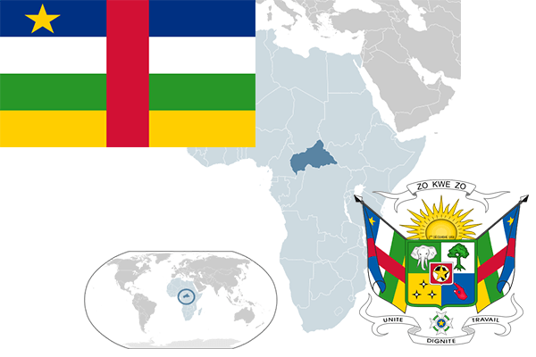

To`liq nomi: Markaziy Afrika Respublikasi
Region: Markaziy Afrika
Qonunchilik shakli: Respublika
Mustaqillik kuni: 13-avgust 1960 yil (Fransiyadan)
Poytaxt: Bangi
Maydoni: 622 984 km² (dunyoda 42 -o`rinda )
Chegaradosh davlatlari: Chad, Sudan, Kameron
Aholisi: 5 057 000 (dunyoda 126 -o`rinda, 2012 -yil roʻyxat)
Aholi zichligi: 6,1 /km²
Aholining o`rtacha yoshi: 43,75 yil ( 43,8 ayollar, 43,7 erkaklar)
Rasmiy tili: fransuz va sango tili
Dini: 60% mahalliy dinlar, xristian, musulmon
Pul birligi: Afrika franki
Telefon prefiksi: +236
Internet domen: .cf
Xalqaro tashkilotlarga a`zoligi: BMT (1960 –yildan)
Dengiz va okeanlarga chiqishi: Yo`q
YIM: Butun: $ 4453 mln, Jon boshiga: $ 391 (2005 - yil roʻyxati)
Yirik shaharlari: Bangi